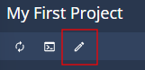
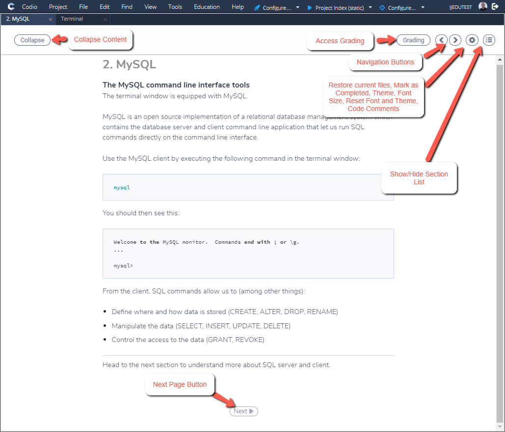
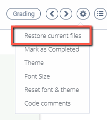

Author and student views¶
Students do not have access to the Codio content authoring tools in Guides. When a student begins an assignment, the Guide is automatically shown and the content will be rendered as intended for them and they cannot modify it. Content authors may specify whether students can close the Guides in the Global Guide Settings. Content authors are able to view content as students would see it.
Editing content in Guides¶
Only an author is able to edit the content. Students and users with read-only rights will not be able to. Click here for details on page editing.
Preview content in Guides¶
You can preview content in Guides in one of the following ways:
Press the preview button in the top right area of the edit pane, this will switch to preview mode. You can switch back to editor mode by pressing the Editor button.
Select the Tools->Guide->Play menu option.
Click the launch button at the top of the Filetree.

Guide player Options¶

When the Guide is in Play mode, the following options may be available depending on who is viewing:
The Collapse button allows the user to collapse the content pane to provide a larger working area. This option does not show if the page layout is One Pane.
Navigation Buttons provide forward/backward scrolling in the guide.
Settings allow the user to view the assignment as a teacher (e.g. show solution information hidden to students) change the Theme (light/dyslexic), Mark as Complete, change the font size, reset both the theme and fonts, to restore the current files (see below) and to access Code Comments. See Dyslexia Support section
Show/Hide Index List the Index icon allows the user to show/hide the index.
Grading is available for teachers to access the grading area. Students do not see this option.
Restore current files¶
The Restore current files feature provides the ability to reset/restore any edited files on that page to their initial state. Files can be restored from the menu as shown below.
